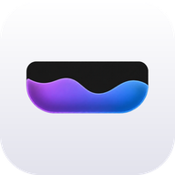

Notcholino
Turn your MacBook's Notch into a dynamic hub for Live Activities, notifications and interactive tools.
Download View on GitHubInteractive preview: hit skip, tap the dots, swipe. Nothing actually plays.
What is it?
Notcholino is a free and open-source notch app for macOS. It extends the hardware notch with a fluid overlay that expands on hover and shows what matters: now playing, upcoming events, volume and brightness, and more.
Alpha Notcholino is in early development. Expect rough edges and breaking changes between versions.
Features
Dynamic Notch
A native overlay that blends with the hardware notch, with multi-monitor support.
Now Playing
Control Spotify and Music, and see anything macOS reports as playing: YouTube, Netflix, Prime Video in a browser, Amazon Music and more.
Calendar & Reminders
See upcoming events and the reminders due today, and jump to them in Calendar.
System HUD
Volume and brightness feedback shown in the notch.
Native Settings
A System Settings–style preferences window built with SwiftUI.
Control Center & plugins
Add buttons to the notch with plugins, installed from a built-in store.
Shelf
Drag a screenshot, a recording or any file toward the notch: it keeps it for you, without saving it on the Desktop, until you drag it somewhere.
Popups & Do Not Disturb
A small message under the notch when AirPods, the charger or a disk connect, and a moon beside it while a Focus is on.
Join meetings
Calendar events with a Zoom, Meet or Teams link get a Join button.
Raycast
Raycast integration is in the works.
Light on your Mac
Notcholino stays out of the way. Measured on a MacBook Pro (Apple M5, macOS 26.6), with the notch closed, the mouse still and no music player open:
Opening the notch takes 47 MB and 0.05 % CPU. Espresso adds about 1.5 MB while it is on. You can measure it on your own Mac with scripts/benchmark.sh; the details are in the README.
Plugins
The Control Center panel of the notch holds plugin buttons. Open Settings → Control Center to install plugins from the built-in store: they are downloaded from the releases of this repository, at their latest version, after you confirm and a checksum check.
↕︎ Scrolly
A switch that reverses the vertical scroll of your mouse wheel and leaves the trackpad alone.
🌡️ Hotter
Your Mac's temperature as the button itself, green to red as it heats up. Click for average or highest, and a small graph.
🔋 BatLife
The battery level as the button, with health, cycles, power in use and time left.
🍅 Tomato
A Pomodoro timer: you choose the work and break minutes, it repeats, with a small clock under the notch and a sound.
✨ Dusty
Clean mode: black screen and a locked keyboard and trackpad for 5 to 60 seconds. ⌘⇧C ends it.
💻 CloseMe
Experimental. Keep the Mac running with the lid closed, with the screen off.
☕ Espresso
Keeps your Mac and its screen awake, indefinitely or for 10 minutes up to 12 hours, or until a time you pick. Try it in the preview above.
📋 Clippy
The last 10 things you copied, to copy again with a click. Kept in memory only, never on disk.
👁️ Watcher
An icon beside the notch while the microphone or the camera is in use, and a popup when it starts.
📡 Pinger
How fast your connection answers, as a number and a graph, and whether a VPN is on.
🎨 Picker
Pick a color from anywhere on your screen and copy it as HEX, RGB or HSL.
🔠 Reader
Drag over any text on the screen and it is copied to your clipboard.
🎧 Devices
The battery of your AirPods, mouse, keyboard and other Bluetooth devices.
🔒 Quicky
Lock the screen, turn the display off or start the screen saver, in one click.
🧹 Tidy
Hide the icons on your Desktop with one click, and show them again with another.
Want to write your own? See the plugins folder on GitHub.
Install
Requires macOS 14 or later. Download the latest build from the Releases page, open the DMG and drag Notcholino to Applications. Then follow the first launch guide below: macOS will block the app the first time.
With Homebrew, one command (it also skips the first-launch warning):
brew install --cask Peppe37/notcholino/notcholinoPrefer building it yourself? Install xcodegen, run xcodegen generate and open Notcholino.xcodeproj. See the README.
First launch: allowing the app
Notcholino is not notarized by Apple yet (that requires a paid developer account), so macOS shows a warning saying it cannot verify the app. This is expected. Here is how to open it:
- Open Notcholino from Applications. A message says it could not be opened. Click Done (do not click “Move to Trash”).
- Open System Settings → Privacy & Security.
- Scroll down to the Security section. You will see “Notcholino.app was blocked”. Click Open Anyway.
- Confirm with your password or Touch ID, then click Open. You only need to do this once.
Prefer the Terminal? This removes the quarantine flag and does the same thing:
xattr -dr com.apple.quarantine /Applications/Notcholino.appVolume and brightness: to show them only in the notch, allow Notcholino in System Settings → Privacy & Security → Accessibility. It is optional: without it, macOS shows its own HUD too.
Why trust it? Notcholino is fully open source: you can read every line of code in the repository, or build the app yourself with Xcode and skip this warning altogether. The release is built automatically by GitHub Actions from the tagged source.
Questions
macOS says it can't verify the app
It asks for permissions again after an update
The macOS volume HUD still shows
Spotify Like doesn't work
YouTube or Netflix doesn't show up
What does it do with my data?
Is it really free?
Support & community
Notcholino is a free project made by one person. Here is how to get help, and how you can help it grow.
Ask or share an idea
Questions and ideas in GitHub Discussions.
Report a bug
Something broken? Open an issue, it takes a minute.
Contribute
Code, plugins, translations: start from the contributing guide.
⭐ Star on GitHub
The easiest way to help others find it. Tell a friend too.
Support the project
If Notcholino is useful to you, you can help keep it going. It pays for the time behind the project, and for the Apple Developer Program, which is what it takes to ship notarized builds with no warning at first launch.